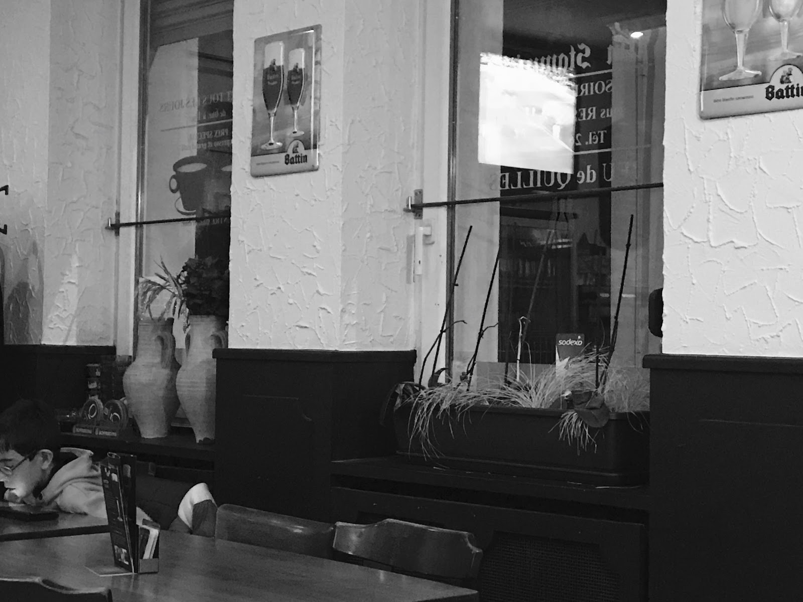
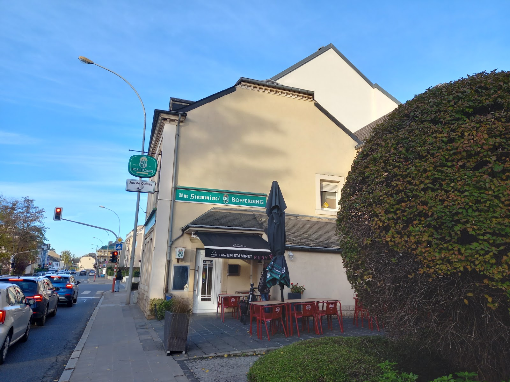

Le stamminet
Le café du quartier, du matin à tard le soir.
Un vrai « stamminet » — le café de quartier à la portugaise, sur la Route de Longwy : on y vient pour un café le matin, un plat le midi, un verre et une partie le soir.
Banquettes, amphores portugaises et souvenirs de brasserie, la Bofferding en pression, les soirs de match sous la terrasse couverte, drapeaux au vent. Une adresse de quartier, sans chichi.

